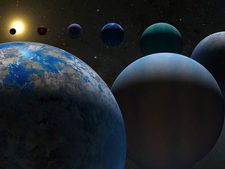

პლანეტის სიცოცხლისუნარიანობა — საზომი, რითაც იზომება პლანეტის ან ბუნებრივი თანამგზავრის სიცოცხლისთვის ხელსაყრელობა.სიცოცხლე შეიძლება პირდაპირ პლანეტაზე ან თანამგზავრზე წარმოიქმნას ენდოგენურად, ასევე შესაძლებელია სხვა სხეულიდან მოხვედრაც, ეს არის ჰიპოთეტური პროცესი, რომელიც ცნობილია, როგორც „პანსპერმია“.აუცილებელი არ არის პლანეტაზე იყოს სიცოცხლე, რომ იგი ჩაითვალოს სიცოცხლისუნარიანად, საკმარისია გარემო და პირობებიც.ვინაიდან დედამიწის გარდა სიცოცხლის არსებობა სხვაგან უცნობია, პლანეტარული სიცოცხლისუნარიანობა მეტწილად არის დედამიწიდან გამომდინარე და მის პირობებს მორგებული, მზის და მზის სისტემის მახასიათებლებით, რომლებიც ხელსაყრელია სიცოცხლისათვის. სიცოცხლისთვის უმნიშვნელოვანესია ენერგიის წყარო, ტერმინი გულისხმობს, რომ მრავალი სხვა გეოფიზიკური, გეოქიმიური და ასტროფიზიკური კრიტერიუმი უნდა დაკმაყოფილდეს. NASA- მ განსაზღვრა საცხოვრებლად ვარგისიანობის ძირითადი კრიტერიუმები, როგორიცაა თხევადი წყლის არსებობა,რთული ორგანული მოლეკულების შეკრება და ენერგიის წყარო, რათა შენარჩუნდეს მეტაბოლიზმი.2018 წლის აგვისტოში მკვლევრებმა განაცხადეს, რომ პლანეტებზე, რომლებზეც წყალია შეიძლება სიცოცხლისთვის ხელსაყრელნი გამოდგნენ. ორგანიზმისთვის სასიცოცხლო პირობების პოტენციალის დადგენისას, კვლევებით ყურადღება მახვილდება მის ორბიტალურ თვისებებზე, ატმოსფეროსა და ქიმიურ შემადგენლობაზე. ძირითადად განიხილება კლდოვანი, სველი ხმელეთის მქონე ტიპის პლანეტები და ბუნებრივი თანამგზავრები, რომელთაც დედამიწის მსგავსი ქიმიური პოტენციალი აქვთ. მოსაზრება, რომ დედამიწის გარდა სხვა პლანეტებზე შესაძლოა სიცოცხლე არსებობდეს, ანტიკურია, თუმცა ისტორიულად იგი ფილოსოფიით უფრო იყო დაკომპლექტებული, ისევე როგორც ფიზიკური მეცნიერებები. მეცნიერული კვლევები მეოცე საუკუნიდან იწყება. 90-იანი წლების დასაწყისში აღმოაჩინეს მრავალი ექსტრასოლარული პლანეტა, რაც ადასტურებს იმას, რომ მზის სისტემა არ არის უნიკალური.
ამ თემის დაინტერესების შემთხვევაში შეგიძლიათ გადმოწეროთ ფილმი რომლის ლინკიც მდებარეობს გვერდის ბოლოში